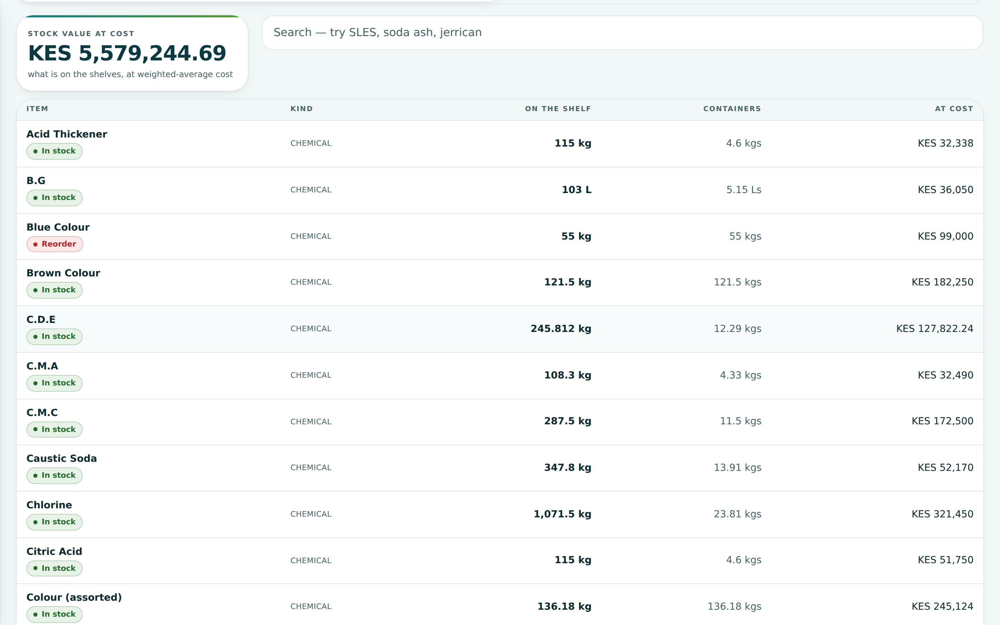
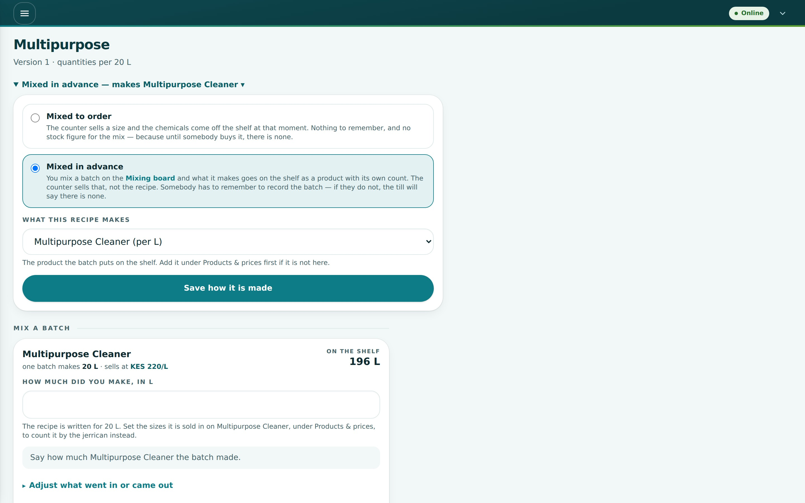
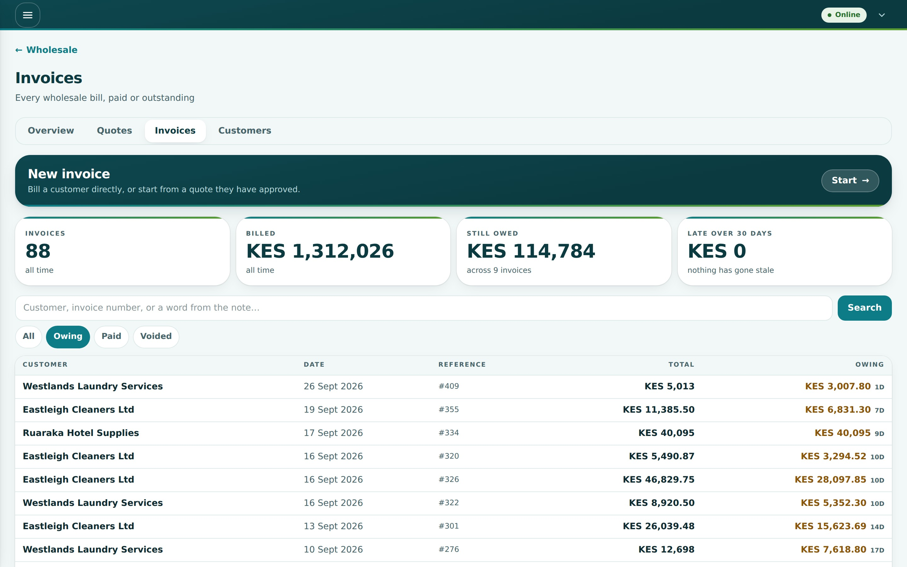
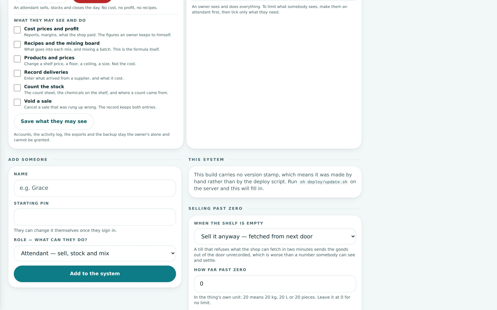

Not a till with a chemicals
label stuck on it.
Weighing, mixing, repacking, credit and haggling are the trade. The system was built around them, not around a supermarket checkout.

A batch, and the cost that follows it
Ingredients leave the shelf, the product arrives on it, and the money lands on what came out — water carries mass, not cost.

A ledger nobody can quietly edit
Every movement is written once and never changed. A mistake is corrected by another entry, in the open, with a name on it.

Versioned, scaled, and off the receipt
Mix to order or mix in advance. The formula scales to any batch — and never prints on the customer's copy.

Who owes, and since when
Limits per customer, ageing by the day, statements to send. The oldest unpaid bill is on the first screen you open.

Receipt, invoice, delivery note
Thermal on the counter printer, A5 on paper, or straight into WhatsApp as a file — with a signature block for the lorry.

What each person may see
Two roles and six switches. Cost and profit never reach an attendant's phone — the server refuses before it answers.